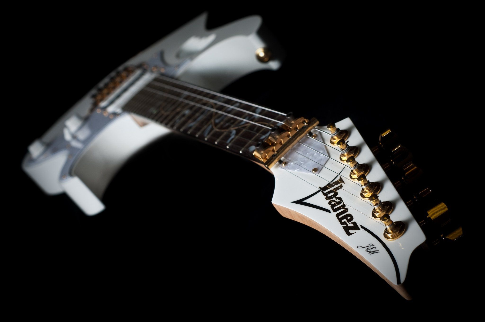

Free guitar lessons, simple virtual audio routing, and clean digital live mixing - sharing what I know so you can play, record, and be heard.

I started on guitar and ended up chasing the whole signal chain - the pick, the cable, the interface, the mix. Learning where the sound actually goes changed how I play.
Good tone isn't expensive gear, it's setup. I spent years learning gain staging and routing the hard way so the same mix holds up in the room and on a stream.
Someone once walked me through my first setup for free. That's why lessons and help here stay free - if one thing I explain saves you a weekend of guessing, it's worth it.
Beginner guitar - chords, strumming, and your first songs

Home recording - getting a clean take without the guesswork
Free help sessions - bring a question, leave with a next step
Sending your guitar into your computer shouldn't be a maze. We'll set up virtual cables, an interface, and the right driver so audio reaches the app you're actually using.
Clean input, no clipping, no buzz. We work from instrument to speakers one step at a time until every stage has headroom and nothing fights for level.
Digital console or app, mains and monitors. I'll help you build a show file you can recall every week, with a stream feed that matches the room.
I'm a guitarist and audio tinkerer. Somewhere between learning my first chords and mixing my first live show, I realised the hard part was never talent - it was knowing what to plug in, in what order, and why.
"Music can change the world because it can change people." — Bono
So I teach guitar and share how audio actually flows - virtual cables, interfaces, digital consoles. Lessons and help are free, because access to a clean sound shouldn't depend on who you know.